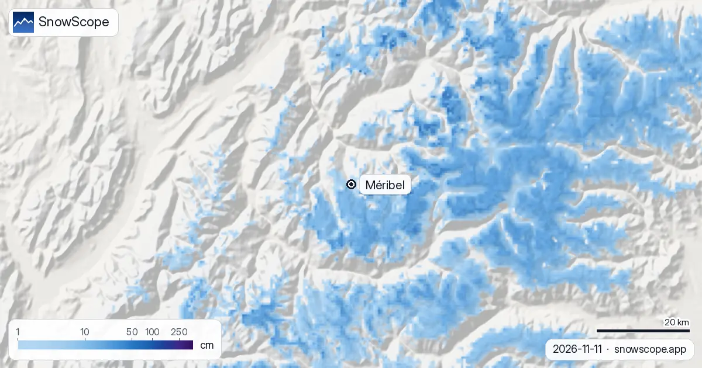
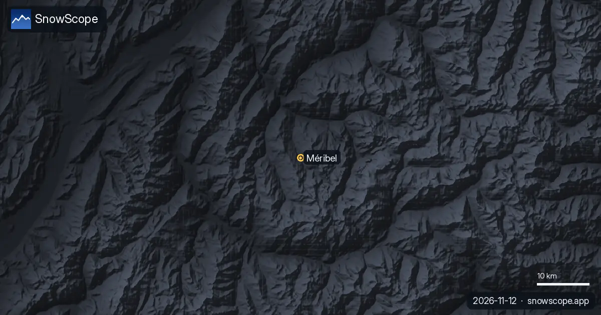
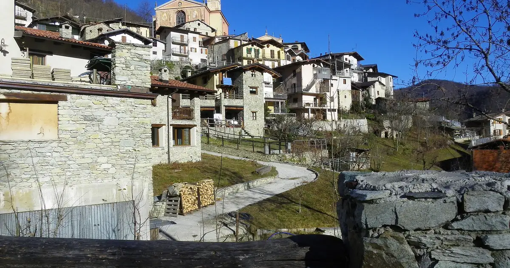
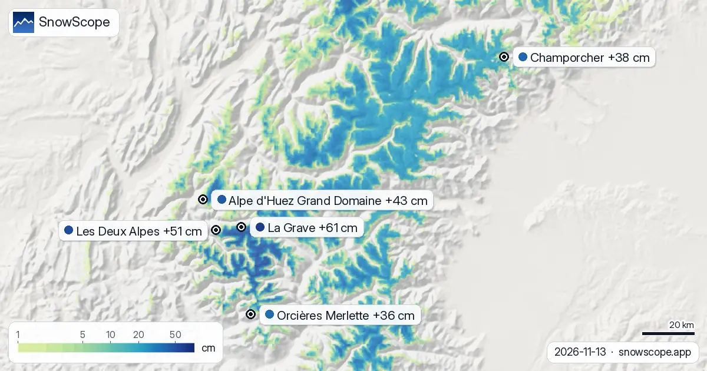

ميريبيل، حالة التلج: 24 سنتيمتر فالفوق و99 سنتيمتر فالطريق (12 نونبر 2026)
الشتوة ديال ميريبيل غادي توصلها أول توصيلة حقيقية. الحساب ديال الموديل ديال 11 نونبر كيبين 24 سنتيمتر فالفوق (2920 متر)، 1 سنتيمتر فالوسط (2026 متر) ووالو فالدوار ف 1132 متر، ولكن التوقع ديال 7 أيام هو العنوان: 99 سنتيمتر ديال التلج الجديد فالفوق، 58 سنتيمتر فالوسط و3 سنتيمتر فالواد، منهم 18 سنتيمتر فالفوق غير ف 24 ساعة الجاية.
شوف توقعات التلج مباشرة ديال Méribel فالتطبيق ديال SnowScopeالعلو ديال التلج، التنبيهات والخريطة 3D، فابور.
فين كاين التلج دابا
القمم العالية ديال المحطة، الجهة ديال سولير ومون فالون اللي كتربط ميريبيل مع كورشوفيل وفال طورانس فلي 3 فالي، فيهم 24 سنتيمتر من بعد 18 سنتيمتر فآخر 7 أيام. الوسط، فين كينزلو أغلب البيستات لموتاري، فيه 1 سنتيمتر، والسيمانة اللي فاتت زادت فيه 7 سنتيمتر. الواد ناشف.
خود الأرقام بحال تقدير ديال الموديل للمنطقة: العصا فحفرة فالظل غادي تبين كثر، والمنحدر المشمس قل، والتلج ديال بداية الموسم هو ما باقي الأرض والشمس كياخدو منو الحصة ديالهم.

السيمانة الجاية
التوقع كيحط 99 سنتيمتر فالفوق و58 سنتيمتر فالوسط فظرف 7 أيام، 18 سنتيمتر فالفوق ف 24 ساعة الأولى. إلا طاح كيف شافو الموديل، الوسط كيدوز من 1 سنتيمتر لأول قاعدة فسيمانة وحدة، والفوق كيفوت نونبر عادي.
توقع بهاد الحجم عندو هامش واسع: العاصفة الأولى هي الجزء المضمون، المجموع لا. والريح فالقمم العالية غادي تحرك بزاف منو للحفر.
ميريبيل مقارنة مع الماضي ديالها
ف 46 شتوة اللي فاتو (1980-81 حتى ل 2025-26) أول تلج كيكون فالفوق نهار 26 شتنبر، فالوسط نهار 11 أكتوبر وفالواد نهار 3 نونبر. نونبر عادي فيه 4 سنتيمتر فالتحت، 19 سنتيمتر فالوسط و62 سنتيمتر فالفوق؛ دجنبر كيطلع ل 20 و55 و139 سنتيمتر.
القمة ديال شتوة متوسطة هي 54 سنتيمتر فالواد، 159 سنتيمتر فالوسط و343 سنتيمتر فالفوق، و18 سيمانة ديال الشتوة فيهم 50 سنتيمتر ولا كثر فالوسط ف 9 من 10 شتوات. الشتوة اللي فاتت وصلات ل 67 و174 و312 سنتيمتر.
لحجز فدجنبر
الشهور الأكثر تلجا فميريبيل لفوق هي مارس وأبريل (267 سنتيمتر و297 سنتيمتر فالفوق)، ولكن دجنبر مريح من دابا فالوسط فأغلب الشتوات (55 سنتيمتر). المنطقة المرسومة فيها 142 كيلومتر ديال البيستات و46 تيليسييج بين 1132 متر و2920 متر. تبع العاصفة ديال هاد السيمانة، ومن بعد السطر ديال دجنبر.
نصايح للي كيتزلجو
- راقب 24 ساعة الجاية فالفوق: 18 سنتيمتر هي الجزء ديال التوقع اللي تقدر تعول عليه.
- التلج الجديد فوق قاعدة ديال 1 سنتيمتر ماشي قاعدة للتزلج: تسنى الفتح ديال المحطة والبلاغ ديال البيستات ديالها.
- المجاميع الكبيرة ديال التلج الجديد كتهز الخطر ديال الانهيارات: بلاغ Météo-France كيطبق على أي خطة خارج البيستات.
خرائط أخرى (مواقع خارجية)
المراجع والمصادر
- ميريبيل، الموقع الرسمي (التيليسييجات، تواريخ الفتح، بلاغ البيستات) www.meribel.net/
- Météo-France، طقس الجبل وبلاغات الانهيارات meteofrance.com/meteo-montagne
على هاد الأرقام
الأرقام ديال التلج: الموديل ديال التلج ديال SnowScope، الحساب ديال 11 نونبر 2026، فتلاتة ديال العلوات فالمحطة (تقدير ديال الموديل للمنطقة، ماشي قياسات ديال المحطة)، والتاريخ ديال التلج ديالنا، 46 شتوة اللي فاتت (1980-81 حتى ل 2025-26)، موديل ديال اللي فات مصحح بالعلو. الطول ديال البيستات وعدد التيليسييجات: OpenSkiMap. التوقعات كتبدل: شوف الخريطة قبل ما تمشي.
النشرات الرسمية ديال الانهيارات: Météo-France – Bulletin d'estimation du risque d'avalanche
كيفاش تستاشهد بهاد المقال
للبحث، التعليم ولا الصحافة: الأرقام والرسومات تقدر تعاود تخدم بيهم بحرية تحت CC BY 4.0 مع هاد الاستشهاد.
SnowScope (2026), ميريبيل، حالة التلج: 24 سنتيمتر فالفوق و99 سنتيمتر فالطريق (12 نونبر 2026), https://snowscope.app/blog/ar/2026/11/meribel-snow-conditions-12-november-2026.html, تشاف ف 2026-11-12
SnowScope (Atlas Labs). (2026, November 12). ميريبيل، حالة التلج: 24 سنتيمتر فالفوق و99 سنتيمتر فالطريق (12 نونبر 2026). SnowScope snow reports. https://snowscope.app/blog/ar/2026/11/meribel-snow-conditions-12-november-2026.html
BibTeX
@misc{snowscope2026meribelsnowconditions12n,
author = {{SnowScope (Atlas Labs)}},
title = {ميريبيل، حالة التلج: 24 سنتيمتر فالفوق و99 سنتيمتر فالطريق (12 نونبر 2026)},
year = {2026},
month = nov,
howpublished = {\url{https://snowscope.app/blog/ar/2026/11/meribel-snow-conditions-12-november-2026.html}},
note = {Published 2026-11-12 09:23 UTC; accessed 2026-11-12}
}· CC BY 4.0 · الطريقة، الداتا والأدوات →
Méribel: التلج والحرارة حسب العلو، هاد الشتا مقارنة مع اللي فاتت (الأدوات) →
تابع Méribel
فابور: ميساج ملي يجي التلج، والتوقعات كل صباح.
تقارير أخرى ديال التلج

Artesina طاح فيها 44 سم ديال تلج جديد ف 72 ساعة اللي فاتو. دابا فيها تقريبا 20 سم فالجهة الفوقانية، حسب الموديل ديال التلج ديالنا.

حتى ل 10 نونبر، التوقعات ديالنا كتعطي 36 سم ف Orcières Merlette، 33 سم ف Les Deux Alpes و 32 سم ف La Grave. الأرقام ديال المحطات ديال التزلج تقديرات …

التلج الجديد ف La Grave: 61 سم ف 72 ساعة اللي فاتو، فيهم 3 سم ف 24 اللخرة. الموديل ديال التلج ديالنا كيحط دابا تقريبا 78 سم فالجهة الفوقانية. …